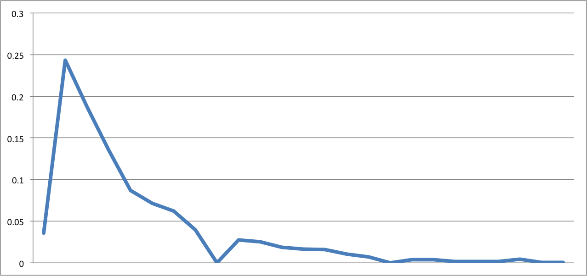

Project 2
Chip Bell
Project Description
Build a simulation of a subset of the Washington Area Metro System
Subset chosen since no lines intersect, so some lines don't affect others
Chose a section of track that has the widest variety (three) of train lines running
A map really helps
Goal
Visually see trains moving through the metro system
Gain intuition about WMATA's scheduling for train
Understand how track outages affect train throughput
Tools used
Similar to the last project, the project was built using
Backbone and
CoffeeScript
Leaflet was used for the maps, and adding polygons and
what-not.
Mocha was used for testing
Architecture
Discrete-Event Simulation, using a Backbone collection as an event queue
Runs in "scaled real-time" so we can change the system's behavior on the fly
Models to represent individual Trains, Stations, connections between stations, and the entire metro system itself
Views to represent items on the map, along with statistics and interacting with the system
Fun Features
Trains on the map are colored based on which line they are
Clicking on a station connection will tell you trains waiting, and tracks disabled
You can disable tracks on the fly
The map can be zoomed, dragged, etc.
Input Data
WMATA provides an API
I wrote a cron job that pinged the API every minute for a week.
Imported them into MongoDB
This is what I got: 2,504,793 documents that all look sort of like this:
Input Analysis
What is the interarrival time of trains look like?

Eastbound Interarrivals.
Westbound Interarrivals.
How long does it take for trains to travel between stations? In general, 2 minutes